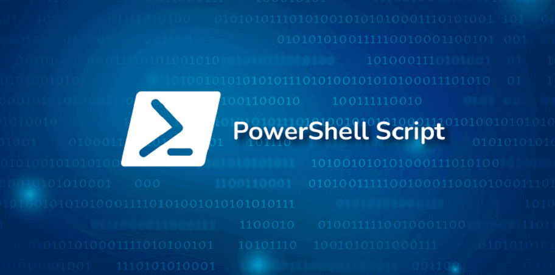
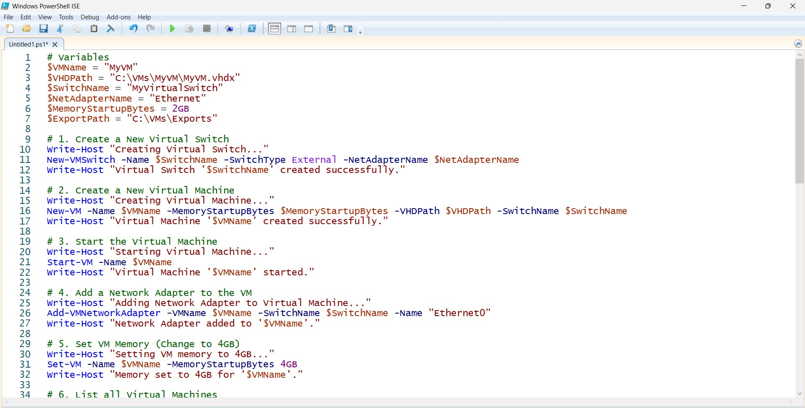

<!-- <!DOCTYPE html>
<html lang="nl-BE">
<head>
    <meta charset="UTF-8">
    <meta name="viewport" content="width=device-width, initial-scale=1.0">
    <title>Powershell Script voor het Automatiseren van Hyper-V Installatie en Configuratie</title>
    <link href="https://cdn.jsdelivr.net/npm/bootstrap@5.3.0/dist/css/bootstrap.min.css" rel="stylesheet">
    <link rel="stylesheet" href="https://cdn.jsdelivr.net/npm/bootstrap-icons@1.10.5/font/bootstrap-icons.css">
    <link rel="stylesheet" href="css/reset.css"> 
    <link rel="stylesheet" href="css/fonts.css"> 
    <link rel="stylesheet" href="css/style.css">
</head>
<body>
    <header>
        <nav class="navbar navbar-expand-lg navbar-dark bg-dark">
            <div class="container">
                <a class="navbar-brand" href="#"></a>
                <button class="navbar-toggler" type="button" data-bs-toggle="collapse" data-bs-target="#navbarNav" aria-controls="navbarNav" aria-expanded="false" aria-label="Toggle navigation">
                    <span class="navbar-toggler-icon"></span>
                </button>
                <div class="collapse navbar-collapse" id="navbarNav">
                    <ul class="navbar-nav ms-auto">
                        <li class="nav-item">
                            <a class="nav-link active" aria-current="page" href="index.html">Home</a>
                        </li>
                        <li class="nav-item">
                            <a class="nav-link" href="portfolio.html">Portfolio</a>
                        </li>
                        <li class="nav-item">
                            <a class="nav-link btn btn-outline-primary text-white ms-lg-2" href="contact.html">Contact</a>
                        </li>
                    </ul>
                </div>
            </div>
        </nav>
    </header>

    <main class="container">
        <h1 class="my-5 text-primary">Powershell Script voor het Automatiseren van Hyper-V Installatie en Configuratie</h1>
        
        <div class="row">
            <aside class="col-md-4 order-md-1">
                
            </aside>
            <div class="col-md-8 order-md-2">
                <p class="mb-4">
                    In dit project heb ik een PowerShell-script gemaakt om Hyper-V te activeren, virtuele machines (VMs) te creëren en virtuele switches in te stellen, zodat ik snel en efficiënt Windows 11 x64 Education op meerdere virtuele machines kan installeren. Het script maakt gebruik van PowerShell-cmdlets om de Hyper-V-functionaliteit in te schakelen, een virtuele switch te configureren, en nieuwe VMs aan te maken die automatisch kunnen worden geïnstalleerd met Windows 11.
                </p>
                <p class="mb-4">
                    Het proces begint met het activeren van Hyper-V via PowerShell en het instellen van een virtuele switch voor netwerkverbindingen. Daarna creëert het script de VMs en voegt het de juiste schijf- en geheugeninstellingen toe. Zodra de VMs zijn aangemaakt, worden ze automatisch voorzien van een Windows 11-installatie via een ISO-bestand.
                </p>
                <p class="mb-4">
                    Door deze automatisering konden we de installatie en configuratie van meerdere virtuele machines aanzienlijk versnellen, wat veel tijd bespaarde bij het opzetten van een testomgeving of voor grootschalige implementaties.
                </p>
            </div>
        </div>

        <div class="row mt-5">
            <aside class="col-md-4 order-md-1">
                
            </aside>
            <div class="col-md-8 order-md-2">
                <p class="mb-4">
                    Het script maakt het mogelijk om VMs te creëren met vooraf ingestelde configuraties zoals schijfgrootte, geheugen en CPU-instellingen, en kan worden aangepast om verschillende versies van Windows 11 te installeren. Het gebruik van PowerShell maakt het mogelijk om deze taken geautomatiseerd uit te voeren zonder handmatige tussenkomst, wat de efficiëntie verhoogt.
                </p>
            </div>
        </div>
    </main>
    <footer class="container text-center py-3 mt-5">
        <p class="text-white">&copy; 2024 Yonathan | All rights reserved</p>
        <p class="text-white">Copyright not intended</p>
        <p>
            <a href="https://www.linkedin.com/in/yonathan-bruk-4aa32832b/" class="text-white" target="_blank">LinkedIn</a> | 
            <a href="mailto:yonathanbruk744@gmail.com" class="text-white">E-mail yonathanbruk744@gmail.com</a>
        </p>
    </footer>
    <script src="https://cdn.jsdelivr.net/npm/bootstrap@5.3.0/dist/js/bootstrap.bundle.min.js"></script>
</body>
</html>
 -->
